Qui sommes nous ?
La Plateforme_ est une école du numérique et des nouvelles technologies co-fondée
avec le Club Top 20 réunissant les grandes entreprises de la Métropole Aix Marseille.
Elle comprend une offre de formations diversifiées destinées à former des codeurs
et développeurs web, des experts en sécurité, des ingénieurs spécialisés en
Intelligence Artificielle, et des cadres d’entreprises au travers de cycles de formations
continues.
La Plateforme_ est membre du programme Grande Ecole du Numérique.
Elle est soutenue par de grandes entreprises du territoire comme
le Crédit Agricole Alpes Provence, par la Région Sud, le Département des Bouches du Rhône
la Métropole Aix Marseille Provence.
Nos partenaires
 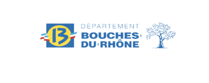
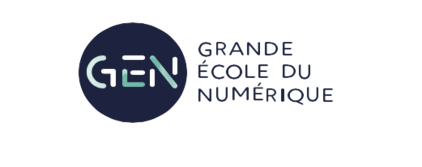
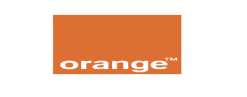
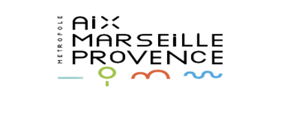
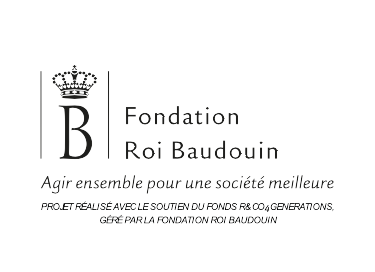
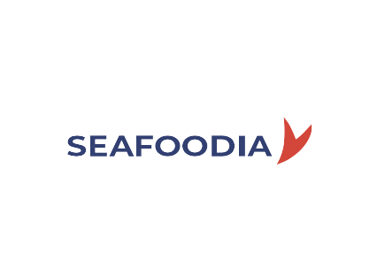
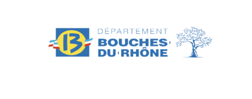
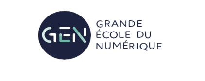
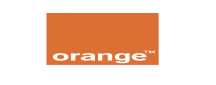
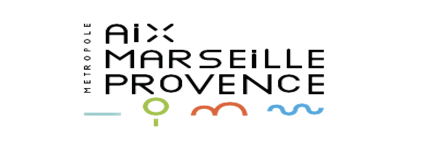
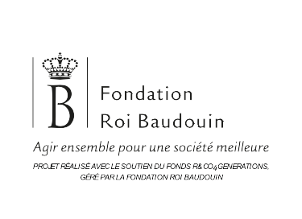
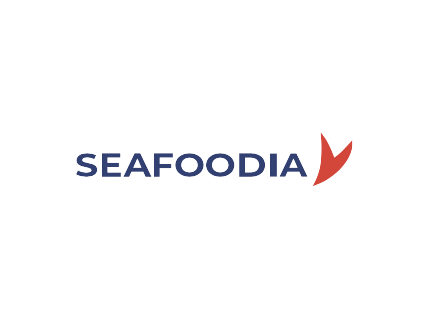
Nos certifications
La Plateforme Marseille a
obtenu la certification qualité
le 18 septembre 2020 au titre de
la catégorie des actions de formation.
La Plateforme Formation a
la certification qualité depuis
le 23 mai 2022 au titre des catégories
des actions de formation,
bilans de compétences, actions
formation par apprentissage.
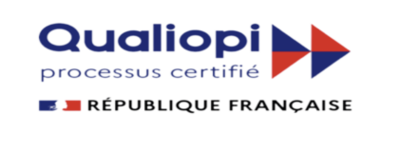
La Plateforme_ est membre
de l’April, soutient et contribue
à des projets Open Source.
L’April est une association
pionnière du logiciel libre en France.
Elle démocratise la diffusion
du logiciel libre et des standards
auprès du grand public,
professionnels et des institutions.
La Plateforme_ est membre
de l’AFCPD.
L’AFCDP est L’Association Française
des Correspondants à la protection
Données à caractère Personnel.
regroupe les Délégués à la protection
données (DPO) et tous les professionnels
de la conformité, RGPD, CNIL.
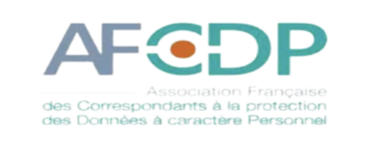
La formation est accessible aux
handicapées. L’école est équipée
d’un ascenseur pour accéder aux
étages. Une place de parking
prévue à proximité l’école.
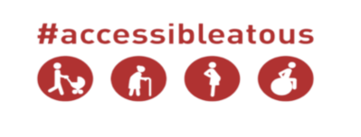